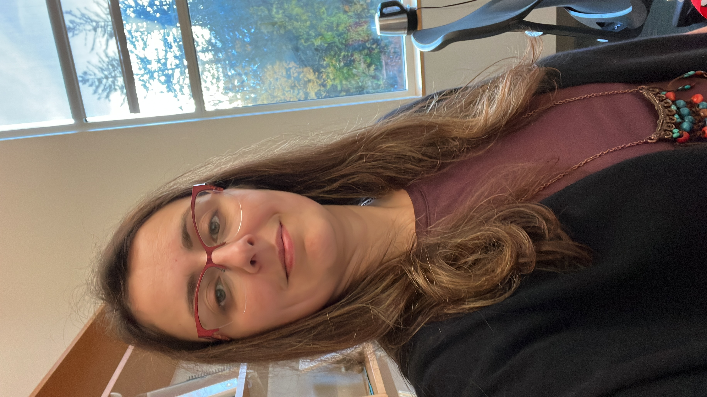

I'm a statistician and data scientist working at the intersection of structured and unstructured data, from relational networks and longitudinal processes to text analysis and NLP. I build rigorous statistical frameworks for complex, messy systems where standard assumptions break. My work has appeared in Decision Support Systems and Scientific Reports, and has been covered by The Boston Globe.
I am faculty at the University of New Hampshire . I'm open to research collaborations, senior scientist roles, and advisory opportunities in health data science and institutional research.
🔬 Health research: AI-based evaluation of health news quality under uncertainty —
multi-criteria decision modeling applied to public health misinformation.
Paper ·
Boston Globe coverage
Email: Burcu.EkeRubini@unh.edu
CV: PDF